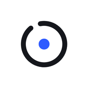

PRODUCT & GROWTH ANALYTICS · COLLABORATION ONGOING

FIND THE FLOW.THE OFFICIAL GAME ↗FlowRing
Product & Growth Analytics
I offered to help FlowRing’s developer understand how people use the game. That became an ongoing collaboration: I help define useful metrics, interpret player behaviour and decide which product questions to investigate next.
My roleProduct and growth analysis, KPI definitions and priorities, working directly with the developer. I’m separating beta testers, demo players and countdown visitors before interpreting retention.